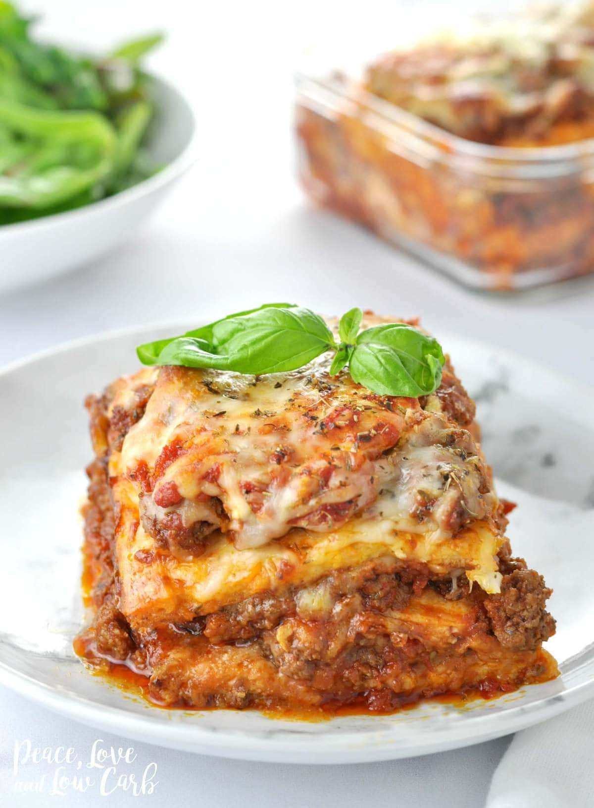

Keto Lasagne

A wonderful low carb take on the Italian classic
This keto lasagna recipe is easy to make and tastes just like the real thing. Great for diabetics watching their blood sugar levels, and anybody following a low carb or ketogenic diet.
Ingredients
For the "pasta"
- 2 large eggs
- 113g cream cheese
- 20g parmesan cheese
- 141g mozzarella cheese
- 1/4 tsp italian seasoning
- 1/4 tsp garlic powder
- 1/4 tsp onion powder
For the filling
- 452g ground beef
- 1 tbsp onion powder
- 1 tsp dried oregano
- 1 tsp garlic powder
- 1 tsp dried basil
- 356ml marinara sauce
- 85g mozzarella cheese
- 6 tbsp whole milk ricotta
- 1 tsp italian seasoning
- fresh basil for garnish
Steps
For the "pasta"
- Preheat oven to 190°c. Line a 9x13 baking dish with parchment paper. Grease the parchment paper.
- In a large mixing bowl, using a hand mixer, cream together the cream cheese and eggs.
- Next, add Parmesan cheese, Italian seasoning, garlic powder, and onion powder. Mix until all ingredients are well combined.
- Using a rubber spatula, fold in mozzarella cheese and mix until well incorporated.
- Spread the mixture into the baking dish, forming a nice even layer.
- Bake on the middle rack for 20 to 25 minutes.
- When the "noodles" are done baking, cool in the fridge for about 20 minutes and then cut into thirds. This makes three perfectly sized "noodle" layers for an 8.5 X 4.5 X 2.5 loaf pan.
For the filling
- In a large skillet over medium-high heat, combine the ground beef, onion, oregano, garlic powder, dried basil and a pinch of salt. Cook until the meat is browned.
- Drain excess fat from pan and add 1 cup marinara sauce to meat. Reduce heat to low and simmer for 10 minutes.
Putting it all together
- Pour ¼ cup marinara sauce into bottom of loaf pan. Top with the first “noodle” layer
- Layer a third of the ground beef mixture. Top with ¼ cup mozzarella cheese and 3 tablespoon ricotta cheese, and cover with another “noodle” layer. Repeat these steps.
- Cover the top “noodle” layer with remaining meat sauce, marinara and mozzarella cheese. Sprinkle Italian seasoning over top. Bake for 20 minutes.